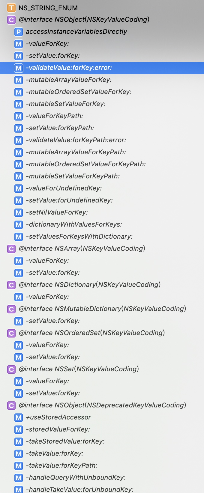

KVC(Key-value coding)是由NSKeyValueCoding非正式协议(其实就是我们所的分类或类别)启用的机制，通过该机制提供了对属性的间接访问。
当对象符合键值编码时，属性可以通过字符串参数进行接口寻址。
这种对属性的间接访问机制提供了对实例变量和其相关访问器方法的直接访问
键值编码是一个基本概念，是许多其他Cocoa技术的基础，例如键值观察(KVO)，Cocoa绑定，CoreData和AppleScript能力。在某些情况下，键值编码还有助于简化代码。
通过KVC 我们可以实现以下功能:
- 获取对象属性
- 操作对象属性
- 在集合对象上进行集合运算符运算
- 获取非对象属性
- 通过keyPath来获取对象属性
NSObject的NSKeyValueCoding分类实现了KVC方法，并提供默认实现;而NSArray、NSDictionary、NSMutableDictionary等都又提供了自己的实现

为了使对象符合键值编码，应确保其实现了NSKeyValueCoding非正式协议，并实现了相应的方法，NSObject使用了NSKeyValueCoding协议并为它们和其它基本方法提供了默认实现。因此从NSObject派生的对象，大部分工作已经完成；
符合键值编码的对象可以实现其他Cocoa的技术:
- KVO
- Cocoa绑定：这一系列技术完全实现了模型 - 视图 - 控制器范例，其中模型封装应用程序数据，视图显示和编辑数据，控制器在两者之间进行调解。 阅读Cocoa Bindings编程主题以了解有关Cocoa绑定的更多信息。
- CoreData: 文档地址
- AppleScript： AppleScript Overview
API
直接访问对象属性
- (nullable id)valueForKey:(NSString *)key;
- (void)setValue:(nullable id)value forKey:(NSString *)key;
//点语法访问器
myAccount.currentBalance = @(100.0);
[myAccount setCurrentBalance:@(100.0)];
//KVC
[myAccount setValue:@(100.0) forKey:@"currentBalance"];
NSNumber *currentBalance = [myAccount valueForKey:@"currentBalance"];
Person *owerModel = [[Person alloc] init];
[myAccount setValue:owerModel forKeyPath:@"ower"];
对于
forKey:不常用，因为我们均可以使用forKeyPath:来代替，对于keyPath只有一层也是可以的
路径访问属性
- (nullable id)valueForKeyPath:(NSString *)keyPath;
- (void)setValue:(nullable id)value forKeyPath:(NSString *)keyPath;
//键路径是以点分隔的多个键字符串 指定了要遍历的对象属性序列
[myAccount setValue:@"lyy" forKeyPath:@"ower.name"];
NSString *name = [myAccount valueForKeyPath:@"ower.name"];
键未定义异常
当找不到key命名的属性时，会调用获取值的
- (id)valueForUndefinedKey:(NSString *)key;
- (void)setValue:(id)value forUndefinedKey:(NSString *)key;
找不到系统会默认引发一个NSUndefinedKeyException异常，可以通过重写这两个方法避免崩溃
对于keyPath的方式访问属性，kayPath的键对应对象属性序列，到哪一级找不到对应属性，就会触发对应该级对象的这个两个方法，而不是总触发第一级对象的
对于非对象值
当setValue时，如果属性不是对象值，而是标量或者结构体时，KVC会自动将value拆箱然后赋值给属性
同理，当valueForKey/keyPath:会自动将属性值装箱，返回一个NSNumber或者NSValue
//封装为为NSValue
NSPoint、NSRange、NSRect、NSSize
对于nil
对于属性为对象值时，可以直接设置对象值为nil，或者获取对象指为nil
对于属性为非对象值，即为标量或者结构体时，此时系统无法帮我们拆箱,会触发
setNilValueForKey:方法，并且引发一个NSInvalidArgumentException异常，可以通过重写该方法避免
多值访问
- (NSDictionary<NSString *, id> *)dictionaryWithValuesForKeys:(NSArray<NSString *> *)keys;
- (void)setValuesForKeysWithDictionary:(NSDictionary<NSString *, id> *)keyedValues;
提供了可以同时获取和设置多个值的方法，相当于一次性掉了多次valueForKey和setValue:forKey:，当key值不存在时也会触发键未定义异常的崩溃和避免崩溃方法
注意： 这两个方法中只能设置的为key，而不能使用keyPath
访问集合属性
对于属性为集合对象，与获取普通对象属性相同，可以直接获取和设置到集合对象属性值
[myAccount setValue:dataArr forKey:@"transactionsArray"];
NSArray *obj = [myAccount valueForKeyPath:@"transactionsArray"];
另外一个较常用的功能,我们可以使用valueForKeypath:直接获取数组中每个对象的属性值集合
NSArray *obj1 = [myAccount valueForKeyPath:@"transactionsArray.payee"];
在keyPath中遇到数组时，会对数组中的每个元素都执行接下来的valueForKeyPath:,最后返回一个值的集合
但是对于集合的属性集合setValue:forkey/KeyPath:并不好用，其并不会将value中的数组分别复制给key中的属性，而是会将value直接赋值给每个key中的属性
操作集合属性
对于集合属性 我们想要修改其内容 需要先用valueForKeyPath获取到其不可变属性值，然后用其创建可变对象值然后修改，再用setValueForKeyPath方法重新设置回去，较麻烦
苹果提供了直接可以获取集合属性的可变对象进行操作的方法
- (NSMutableArray *)mutableArrayValueForKey:(NSString *)key;
- (NSMutableArray *)mutableArrayValueForKeyPath:(NSString *)keyPath;
- (NSMutableOrderedSet *)mutableOrderedSetValueForKey:(NSString *)key;
- (NSMutableOrderedSet *)mutableOrderedSetValueForKeyPath:(NSString *)keyPath;
- (NSMutableSet *)mutableSetValueForKey:(NSString *)key;
- (NSMutableSet *)mutableSetValueForKeyPath:(NSString *)keyPath;
会返回一个行为继承于NSMutableArray/NSMutableOrderedSet/NSMutableSet的内置对象，对这个对象直接操作(例如增加、删除元素)，系统会根据我们的操作直接修改原对象
这样修改维护集合中的对象，还可以支持键值观察机制
这种方法只适合直接修改集合属性，而不适合修改集合属性的属性值集合，原因和不对其使用
setValue:forkey/KeyPath:原因相同
属性验证
NSKeyValueCoding协议提供了支持属性验证的方法。 可以通过调用
- (BOOL)validateValue:(inout id _Nullable * _Nonnull)ioValue forKey:(NSString *)inKey error:(out NSError **)outError;
- (BOOL)validateValue:(inout id _Nullable * _Nonnull)ioValue forKeyPath:(NSString *)inKeyPath error:(out NSError **)outError;
协议的默认实现会像实例搜索是否存在实现了validate<Key>:error:方法，默认为返回YES表示验证成功，我们可以再这个方法中实现自己的验证逻辑
BankAccount *myAccount = [[BankAccount alloc] init];
NSError *error;
NSNumber *balance = @(100.0);
BOOL result = [myAccount validateValue:&balance forKey:@"currentBalance" error:&error];
//BankAccount.m
- (BOOL)validateCurrentBalance:(id *)ioValue error:(NSError *__autoreleasing *)outError {
if (!ioValue || ((NSNumber *)*ioValue).integerValue >= 100) {
*outError = [NSError errorWithDomain:@"错误qqq" code:123 userInfo:@{@"key": @"金额太大了"}];
return NO;
}
return YES;
}
当然如果不想每个不同key验证都写一次验证方法的话，就直接继承实现自己的validateValue
- (BOOL)validateValue:(inout id _Nullable __autoreleasing *)ioValue forKey:(NSString *)inKey error:(out NSError * _Nullable __autoreleasing *)outError {
if (!ioValue || ((NSNumber *)*ioValue).integerValue >= 100) {
*outError = [NSError errorWithDomain:@"错误qqq" code:123 userInfo:@{@"key": @"金额太大了"}];
return NO;
}
return YES;
}
- (BOOL)validateValue:(inout id _Nullable * _Nonnull)ioValue forKeyPath:(NSString *)inKeyPath error:(out NSError **)outError;怎么使用呢????
集合运算符
使用valueForKeyPath:时，可以在路径中嵌入集合运算符
集合运算符是在@关键字标识，指定了getter应该执行的操作，以便在数据返回之前以某种方式操作数据

当keyPath包含集合运算符时，@前路径为左键路径，表示相对操作对象的集合路径，当操作对象直接为集合对象时，可以省略左键路劲;@运算符后的为右键路径，表示操作的集合中的属性，除了@count都需要右键路径
集合运算符共有三种类型:
聚合运算符
以某种方式合并集合中的对象，并返回和右键路径属性相同类型的一个值;（@count例外）@avg 读取右键属性值，并将其转为
double类型(将nil转为0)，计算其算术平均值，返回一个NSNumber对象NSNumber *transactionAverage = [self.transactions valueForKeyPath:@"@avg.amount"];@count 获取集合中元素个数，忽略右键属性(如果有)
NSNumber *numberOfTransactions = [self.transactions valueForKeyPath:@"@count"];@max 搜索右键属性对应的值集合 返回最大的那个(比较时忽略nil)
比较使用的时compare:方法，因此右键属性值必须能响应该方法NSDate *latestDate = [self.transactions valueForKeyPath:@"@max.date"];Foundation中内置很多类都已经实现了该方法，我们也可以通过自己实现- (NSComparisonResult)compare:(id)other方法来实现自定义model的compare@min
与@max同理@sum 将集合中右键元素都转为double类型(将nil转为0)求和
@count
NSInteger count = [[myAccount.transactionsArray valueForKeyPath:@"@count"] integerValue];数组运算符
返回一个NSArray实例，返回集合中属性的子集@distinctUnionOfObject返回一个数组其中包含了右键属性的不重复的值的集合(不包含nil元素)；
NSArray *arr = [myAccount valueForKeyPath:@"transactionsArray.@distinctUnionOfObjects.amount"];@unionOfObjects 返回右键属性值的集合并不会去重(不包含nil元素)
嵌套操作符
嵌套运算符处理嵌套的集合，集合的条目本身就包含了一个集合
@distinctUnionOfArrays 返回右键集合属性的所有集合元素中不重复值的集合
NSArray *arr = [objArray valueForKeyPath:@"@distinctUnionOfArrays.transactionsArray.payee"];
unionOfArrays 返回右键集合属性的所有元素集合（不去重）
NSArray *arr1 = [objArray valueForKeyPath:@"@unionOfArrays.transactionsArray.payee"];
@distinctUnionOfSets 与distinctUnionOfArrays类似 不同的是 其需要NSSet实例属性包含NSSet集合
KVC的搜索规则
NSObject提供的NSKeyValueCoding协议默认实现，将基于键的访问映射到对象属性。这些协议方法使用key参数在自己对象实例中搜索访问器、实例变量以及某些约定命名方法
基础Getter的搜索模式
valueForKey:的默认实现，会根据key参数在对象实例中进行以下搜索流程:
- 按顺序搜索实例变量中的方法名类似:
get<Key>、<Key>、is<Key>或者_<Key>的方法,如果找到直接跳到第5步 搜索实例中匹配
countOf<Key>方法和objectIn<Key>AtIndex:方法(对应NSArray类的基本方法)以及<key>AtIndexes:(对应NSArray的objectsAtIndexes:方法)，如果找到第一个方法以及至少后两个方法中的一个，就创建一个相应NSArray所有方法的集合代理对象并返回，否则执行第3步这个代理对象会将接收到的所有NSArray消息转换为
countOf<Key>、objectIn<Key>AtIndex:、<key>AtIndexes:方法的组合来交给原始对象响应。如果原始对象还实现了get<Key>:range:可选方法，也会在适当时候是使用；这个数组代理对象工作起来就像真的NSArray一样代理对象的作用只是将交给其的方法进行组合，转交给原始对象响应，让其工作的像一个真的数组一样
搜索名字为
countOf<Key>、enumeratorOf<Key>和memberOf <Key>的三个方法(对应NSSet类定义方法)，如果找到这个3个方法就返回一个响应所有NSSet方法的代理对象，否则执行第4步
其会将随后收到的所有NSSet方法转换为上面3个方法的组合，让这个代理对象就像真的NSSet一样如果上面方法都没找到，并且接收对象的
accessInstanceVariablesDirectly类方法返回YES。就按顺序搜索_<key>、_isKey、<Key>、is<Key>实例变量名，找到的话执行第5步，否则执行第6步如果是对象就直接返回，如果为非对象就装箱返回
如果都没找到就触发
valueForUndefineKey:异常
基础Setter模式搜索
- 按顺序搜索名字为
set<Key>或者_set<Key>的访问器，找到就直接调用 - 如果找不到简单访问器，并且类方法
accessInstanceVariablesDirectly类方法返回YES，并且按顺序查找<Key>、_is<Key>、<key>、is<Key>实例变量，如果找到直接设置值 - 以上两步都找不到,带用
setValue:forUndefinedKey:默认会引发异常
可变数组的搜索模式
mutableArrayValueForKey:用一下流程返回一个可变数组的代理对象
搜索方法
insertObject:in<Key>AtIndex:和removeObjectFrom<Key>AtIndex:(对应NSMutableArray的私有方法insertObject:atIndex:和removeObjectAtIndex:)，或者方法名为insert<Key>:atIndexes:和remove<Key>AtIndexes:（对应NSMutableArray的为insertObjects:atIndexes:和removeObjectsAtIndexes:）。假如对象有至少一个insert方法或者一个remove方法，就返回一个响应NSMutableArray方法的代理对象。代理对象通过发送一些组合的消息insertObject:in
AtIndex:, removeObjectFrom AtIndex:, insert :atIndexes:,和remove AtIndexes:给 mutableArrayValueForKey:消息的原始接收者来响应这些插入或者删除方法当接收
mutableArrayValueForKey：的原始消息对象实现名称为replaceObjectIn<Key>AtIndex:withObject:或replace<Key>AtIndexes:with<Key>:的（可选）替换方法时，代理对象也会在适当时使用这些方法以获得最佳性能。代理的可变对象会响应所有NSMUtalbeArray方法，并将其转交给原始的对象消息接受者，对集合数组进行修改
如果对象没有可变数组方法，就搜索名称为
set<Key>:的访问器方法，这种情况会向mutableArrayValueForKey:的原始接收者发出set<Key>方法来，来响应NSMutableArray代理对象的消息注意: 这种方法的机制会比上一步的效率低得多，它会重复创建集合而不是修改原有集合,在使用KVC时应该尽量避免这种情况
加入以上2中都没找到哦，并且对象响应
accessInstanceVariablesDirectly类方法返回YES，就按顺序搜索_<Key>和<Key>的实例变量
找到这样的实例变量，就返回一个代理对象，会把NSMutableArray消息转发给实例变量如果以上消息都失败了，就返回一个NSMutableArray的代理对象，该对象在收到
NSMutablrArray消息后向mutableArrayValueForKey:原始接受者发出setValue:ForUndefineKey:消息，会引起NSUndefinedKeyException异常
MutableOrderedSet的搜索模式
mutableOrderedSetValueForKey 与 数组搜索模式类似 ，只是其第一步搜索的方法为insertObject:in<Key>AtIndex:和removeObjectFrom<Key>AtIndex:、 insert<Key>:atIndexes:和remove<Key>AtIndexes:和可选方法replaceObjectIn<Key>AtIndex:withObject: 或 replace<Key>AtIndexes:with<Key>:
MutableSet搜索模式
和mutableArray类似
第一步方法为:
add<Key>Object:和 remove<Key>Object: add<Key>:和remove<Key>:和可选方法intersect<Key>: or set<Key>:
多了第二步骤搜索:
加入mutableSetValueForKey方法调用者是manager object则搜索模式不在继续,详情看CoreData核心编程指南
KVC性能
KVC性能没有直接访问属性快，但是性能消耗微乎其微;
但是需要注意对操作可变集合对象的搜索模式，最好自己实现方法，避免重复创建集合进行赋值，这样性能消耗太大
注意
- KVC本质是运行时查找对象实例的方法或变量，因此可以利用其访问私有变量，因此可以利用这一点，修改系统组件的样式或属性
- 为避免KVC的硬编码，可以采用
NSStringFromSelector(@selector(METHODNAME)) - 可以用KVC来触发KVO，即使在对象没有set访问器方法的情况下，即直接时候使用kvc赋值给对象的实例变量而该变量没有set方法时
参考资料: KVC原理剖析